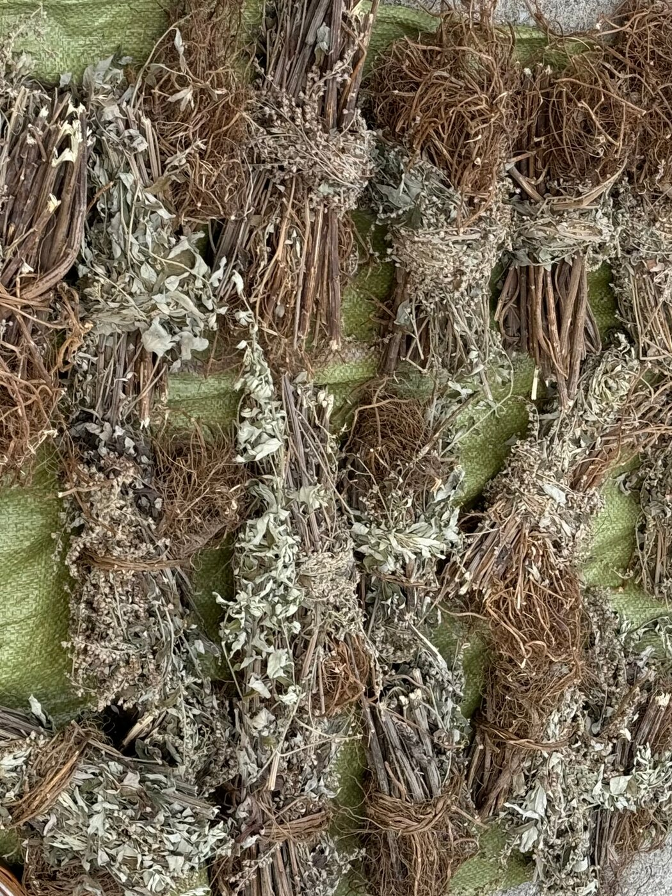
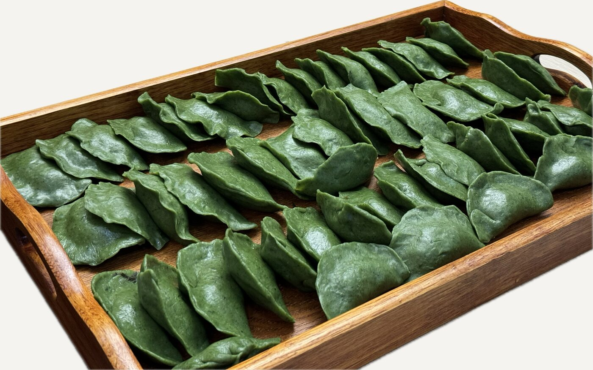
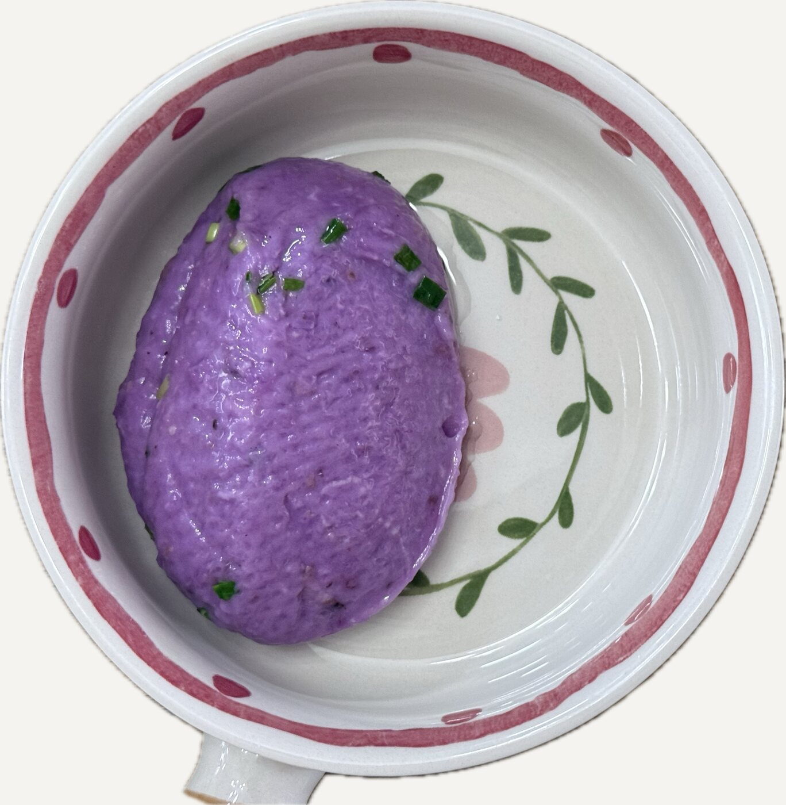
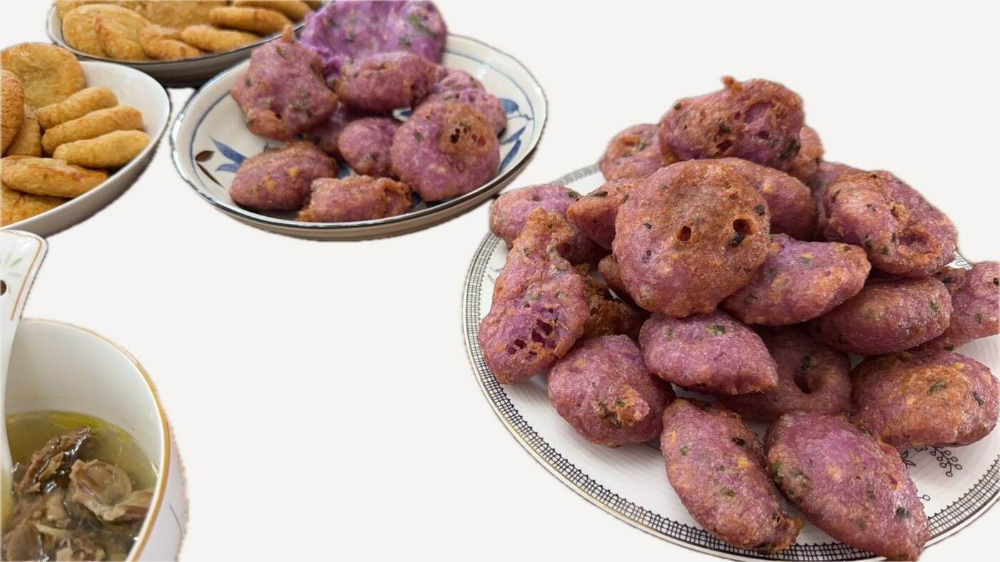
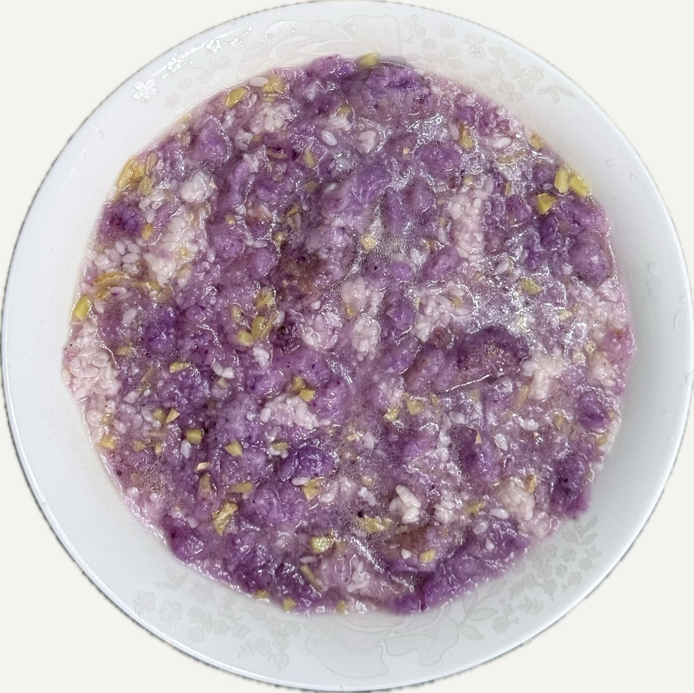
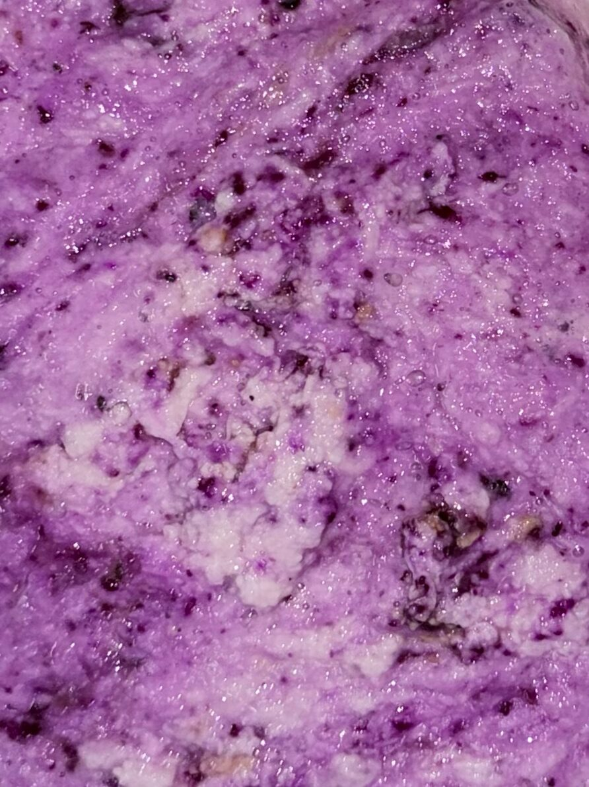

AYHAK · 江西安远Anyuan, Jiangxi
安远话植物图集
Plants and Plant Knowledge in Anyuan Hakka

Contents
目录Contents
- —田地和厨房From field to kitchen8
- —拍照也是一种记录Photography as documentation10
- —关于本图集About this atlas12
- —参与Join us14
这本图集记录了安远当地可食用植物的安远话名称、发音、形态和用途。我们通过照片记录植物在不同生长阶段的样子，也收集与采摘、处理和食用有关的地方说法。
每种植物都是一个入口，让我们从名称出发，进一步了解语言与日常生活之间的联系。
This atlas documents the names, pronunciation, forms, and uses of edible plants in Anyuan Hakka, a Hakka variety spoken in Anyuan County, Jiangxi, China. Photographs capture plants at different stages of growth, alongside local expressions associated with harvesting, processing, and food preparation.
Each plant offers a starting point for exploring the connections between language and everyday life.
点击图集中的照片，可以查看相应植物的记录。Click a photograph in the plates to open the record for that plant.
3Introduction
关于Introduction
本图集记录的是江西省安远县中部的安远话，以及当地居民关于植物的知识。
植物名称不只是词汇。它们也和植物的生长环境、采收季节、处理方式及日常饮食有关。记录这些名称时，我们也希望把相关的声音、照片和生活经验一起保存下来。
This atlas records Anyuan Hakka as spoken in central Anyuan County, Jiangxi Province, together with local residents’ knowledge of plants.
Plant names are more than words. They are tied to where a plant grows, when it is harvested, how it is processed, and what people eat. As we record these names, we also hope to keep the sounds, photographs, and lived experience that go with them.
- 01照片Photographs不同生长阶段的样子，从地里到做好的菜。How the plant looks at different stages, from the field to the finished dish.
- 02叫法Names汉字和IPA，标明是哪里的说法。Chinese characters and IPA, with the place each name comes from.
- 03录音Recordings发音人说的叫法，网页上点一下就能听。Names as said by speakers; tap to listen on the web.
- 04学名Scientific names能确定的，附上植物学名。Botanical names, where they can be confirmed.
- 05环境和吃法Habitat and use长在哪里、什么时候采、怎么做。Where it grows, when it is gathered, and how it is prepared.

Plates
图集Plates
载入中…Loading…
Example
田地和厨房From field to kitchen
以 薯 /seɪ³²⁴/ 为例。薯是当地种植的大薯（Dioscorea alata）。从田里的薯到做好的食物，我们记录了薯粄、薯包、薯酒等名称，也收集了采收、处理和制作过程中的说法。
这些词和说法，把植物、食物与日常生活联系在一起。
Take 薯 /seɪ³²⁴/, the greater yam grown locally (Dioscorea alata). Following it from the field to finished food, we recorded names such as 薯粄, 薯包, and 薯酒, as well as expressions used in harvesting, processing, and cooking.
These words and expressions connect the plant, its foods, and everyday life.
植物 → 食物Plant → food

薯做的米粄ban (rice cake) made with yam


薯酿的酒wine brewed from yam

Method
拍照也是一种记录Photography as documentation
在这个项目中，照片不只是展示植物的配图，也是记录过程的一部分。拍摄植物的不同生长阶段，以及采收、处理和制作后的样子，会引出不同的问题，也帮助我们记录更多名称和日常说法。
In this project, photographs are not just illustrations of plants; they are part of the documentation process. Photographing plants at different stages of growth, and after harvesting, processing, and cooking, prompts different questions and helps us record more names and everyday expressions.
- 01从照片引出说法From photographs to expressions拍摄植物及其加工后的样子，记录相关的名称和表达。Photograph plants and what they become, and record the related names and expressions.
- 02把材料联系起来Connecting the materials将名称、照片、地点、录音和用途放在同一条记录中。Keep names, photographs, places, recordings, and uses together in one record.
- 03让材料回到社区Bringing materials back to the community网页将照片与录音联系起来；纸质版计划通过二维码播放录音，让不同年龄、不同使用习惯的人都能查阅。The website links photographs with recordings; a printed edition is planned, with QR codes that play the same recordings, so that people of different ages and habits can use it.
录音和照片都会先征得发音人同意，署名方式由发音人决定。Recordings and photographs are published only with speakers’ consent, credited as they choose.
11About this atlas
关于本图集About this atlas
- Project scope · 项目范围
- 计划记录安远当地22种可食用植物，现已上线的条目见目录。每条记录标明说法来自哪个乡镇，尚未标明的写“待补”。We plan to record 22 edible plants from Anyuan; entries now online are listed in the contents. Each record notes the township a name comes from; where this is not yet recorded, it is marked as pending.
- Language documentation · 语言记录
- 安远话名称用汉字和国际音标（IPA）记录，声调用五度调值数字标本调。有录音的条目可以直接播放。不同乡镇的不同叫法分别记录，不合并成一个“标准”名称。Anyuan Hakka names are written in Chinese characters and the International Phonetic Alphabet (IPA); tones are given as Chao tone numbers for citation tones. Entries with recordings can be played directly. Different names from different townships are recorded separately rather than merged into one “standard” name.
- Plant identification · 植物鉴定
- 学名只在能确定时列出；尚未确认的条目标注“待鉴定”。安远话的植物名称和普通话名称、学名不一定一一对应。Scientific names are given only where they can be confirmed; others are marked “identification pending”. Anyuan Hakka plant names do not necessarily map one-to-one onto Mandarin names or scientific taxa.
- Fieldwork and photography · 田野调查与摄影
- 照片由 Juan Zhong 拍摄。拍摄植物的不同阶段和用它做的食物，会引出更多名称和说法。Photographs by Juan Zhong. Photographing plants at different stages, and the foods made from them, brings out further names and expressions.
- Contributors · 参与者
- 参与者提供的叫法、照片和录音，按本人同意的方式署名或匿名。Names, photographs, and recordings from contributors are credited or kept anonymous as each person chooses.
- Use and permissions · 使用与授权
- 文字与照片采用 CC BY-NC 4.0；录音只在本网站播放，使用范围以发音人同意的为准，转载或用于研究请先联系我们；网站代码 CC0。Texts and photographs: CC BY-NC 4.0. Recordings are played on this site only, within the scope each speaker agreed to; please contact us before republishing them or using them in research. Website code: CC0. 授权说明License details
Join us
参与Join us
你家里人怎么叫这些植物？你们村有没有别的叫法？用它们做过什么吃的？欢迎发来照片、叫法或者一段录音，会说多少都可以。
What does your family call these plants? Is there another name in your village? What have you made with them? Photographs, names, or a short recording are all welcome, however much Anyuan Hakka you speak.
发邮件给我们Email us 参加安远话复健会Join the Anyuan Hakka meetups
14Colophon
安远话植物图集
Plants and Plant Knowledge in Anyuan Hakka
AYHAK · 江西安远Anyuan, Jiangxi
摄影Photographs：Juan Zhong
联系方式Contact：juanzhon AT buffalo DOT edu
© 2026 Juan Zhong
15